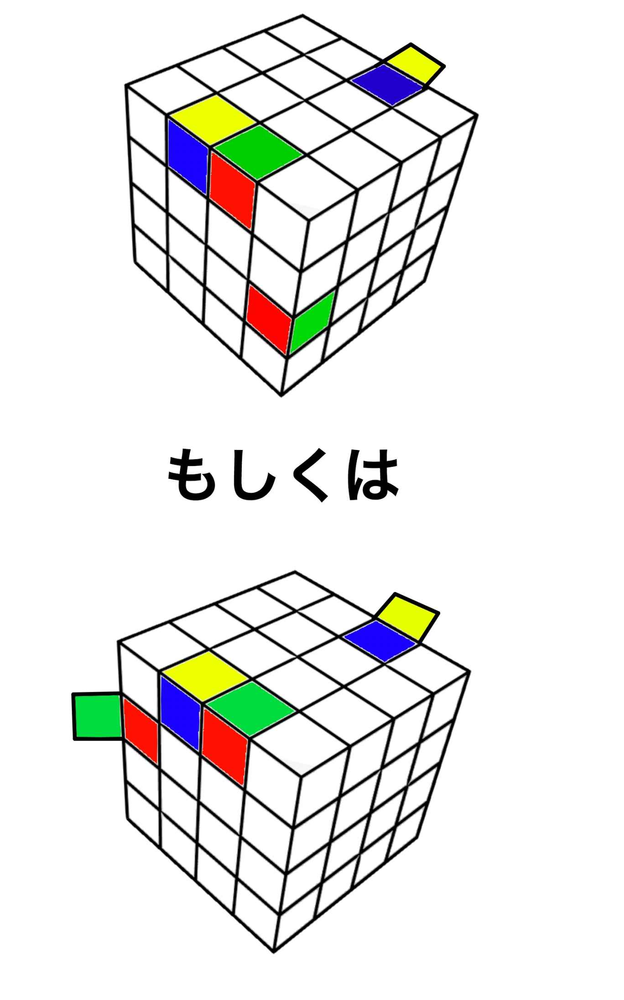

| ４ｘ４ｘ４のルービックキューブ攻略法 (世界ジェニック) | |
| 杉江海飛 | |
| (2017) | |
４ｘ４ｘ４のルービックキューブ攻略法
杉江海飛
１.はじめに
ルービックキューブ。
この単語を耳にした時に一番最初に思い浮かぶのは、おそらく３ｘ３ｘ３のルービックキューブだろう。
この常識は、その知名度だったり、建築学者のエルノー・ルービックが始めて発明・発売したのが３ｘ３ｘ３だったことだったりそしてなにより「其れ以外は其れ以上に難しそう」というふわふわした思い込みだったりという様々な理由から生まれたものなのかもしれない。
知名度には仕方ないこともあるだろう。その後に述べた理由からも助長されることであり、揺るぎない事実である。
しかし最後に挙げた「難易度」これについては異論を述べたい。
確かにキューブの数は３ｘ３ｘ３に比べて４７個も多い。そのためビジュアル的にはとても難しそうに見えるかもしれない。
だが、多少のコツさえ抑えてしまえば、３ｘ３ｘ３のルービックキューブとほぼほぼ何ら変わらない難易度
なのだ。
本書を使って鍛錬さえすれば３ｘ３ｘ３ならｂ既に揃えられる人もそうでない人も、同じように４ｘ４ｘ４のルービックキューブを揃えられるようになるのだ。
そこには一切の差はない。
本書を読み鍛錬するか否か
それのみである。
２.ルービックキューブの選び方
はじめに、どんなルービックキューブを選べばいいのかについて見ていきましょう。
単刀直入に言うと「４ｘ４ｘ４のルービックキューブならなんでもいい」です。
回りさえすれば充分に遊ぶことができますし、本書に載っている解法もまったくもって問題なく使うことが出来ます。
なので、既に持っているという方はそれを使ってください。
しかし、「将来的にはスピードを求める」という方や「どうせなら快適に遊びたい」という方も中にはいるでしょう。
そういう方には競技用のルービックキューブをオススメします。
回転させる時もつっかえずになめらかに回りますし、耐久性にも優れています。
更に良い物を選びたいという方は、「シール」か「タイル」かを確認するのもいいかもしれません。
配色の部分が貼ってあるものなのか、埋め込んであるものなのかという違いです。
耐久性で言うとタイルのほうが圧倒的に長持ちするので、耐久性を重視するという方はタイルを選ぶと良いでしょう。
また、配色についてもキューブを選ぶ際の判断材料になると思います。
ルービックキューブには２種類の配色があります。
「Ｒ.Ｃ.Ｃ」と「Ｔ.Ｏ.Ｃ」です。
日本語で表すと「世界基準配色」と「日本基準配色」ですね。
しかし配色が違うとは言っても黄色と青の場所が変わっているという微々たる違いなので、これについても正直どちらでもよいです。
ただし、本書の参考画像は全て世界基準配色のキューブで説明されているので、強いていうならば世界基準配色を選んでおけば良いのではないでしょうか。

３.パーツの名前
解法を見ていくにあたって必要になる事前知識を抑えていきましょう。
まずはパーツの名前からです。
４ｘ４ｘ４のルービックキューブは、大きく分けて３つのパーツから構成されています。
"エッジキューブ""センターキューブ""コーナーキューブ"の３つです。
センターキューブは一面につき４つ中央に並んでいるキューブのことです。
コーナーキューブは、一面につき４つ配置されている角にあるキューブのことです。
エッジキューブは一面につき8つ配置されている面における縁にあたる部分にあるキューブのことです。
わかりやすくするために、図解にしてみました。黒の部分が該当するパーツです。
理解できたら次に進みましょう。
４.回転記号
次は回転記号について理解していきましょう。
回転記号もパーツの名前と同じく解法を理解するための事前知識ですね。
回転記号とは、簡単にいえば楽譜の音符のようなものです。
其れを見て弾けば、誰もが同じ音楽を奏でることができます。
其れと同じように回転記号の配列を見て回せば、誰もが同じようにルービックキューブの色を移動させることができます。
ここで、その全てを図で見てみましょう。

ちなみにこの画像は仮に青を前面、黄色を上面とした時に回転記号がどういう動きを示すかというのを示したものであり、回転記号で色が固定されるという説明をしているわけではありません。
「こんなにたくさん！？」
そう思うことでしょう。
しかし、全てを正確に覚える必要はありません。
なぜなら、法則さえ覚えてしまえば理解できてしまうからです。
ということで、その法則について説明しましょう。
Ｆ、Ｂ、Ｒ、Ｌ、Ｕ、Ｄ。
この基本となる６つの回転記号から理解していきましょう。
これらのローマ字はそれぞれフロント（front)、バック（back）、ライト（right）、レフト（left）、アップ（up）、ダウン（down）の頭文字です。
これを見るだけで予想できるかもしれませんが、要するに前、後ろ、右、左、上、下の面を示しています。
ということでこの６つは「それぞれが指している面をその面を正面からみた時に時計回りに９０度回す」という回転記号なわけす。
ちなみに反時計回りに回したいという場合は「'（プライム）」を後ろにつけることで示すことが出来ます。
つまり「Ｆ'」は前面を反時計回りに回すというわけです。
しかし、４ｘ４ｘ４の場合この法則では抑えきれない部分がありますよね。
そうです。真ん中の部分です。
３ｘ３ｘ３の場合、Ｍ、Ｓ、Ｅという３つの真ん中の部分を回転させる記号が前記の６つに追加されるだけで済みますが、４ｘ４ｘ４は構造上３つの記号なんかじゃ足りません。
ということでこれ以上覚えることにリソースを割かないためにと考えられたのが「小文字」です。
少々文章的には難解な説明になってしまうので、前記の画像と照らし合わせながら読んで理解していただきたいのですが、小文字で表された回転記号はその面の一枚奥を同じ角度に回す、と考えてください。例えば「ｒ'」だったとしたら、真ん中の右側の列を前に向かって９０度回す、というわけです。
プラスして「'」と同じような面を表すローマ字に付随する記号が２つあるので、そちらもご紹介しておきます。
「ｗ」と「ｔ」と「２」とです。どちらもそれほど難しい意味ではありません。ｗはその面の奥と表面側２つを回すという意味で、ｔは３つ、２は９０度ではなく１８０度回すという意味です。２回回す、という風に考えるとおぼえやすいのではないでしょうか。
「２」は容量的問題上画像に載せて無いので、注意してください。
いかがでしょうか？
少々複雑な部分もありましたが、理解できましたか？
もし理解できなくても、解法が出てくる度にこのページに戻って来て画像と照らし合わせれば解けるのでそんなに気にしないで先に進んでしまうのもいいかもしれません。
５.揃える順番
解法の紹介に入る前に、６面揃えていく際のおおまかな順番からみていきましょう。
センターキューブを揃える
→エッジキューブを揃える
→一面揃える
→側面三段を揃える
→上面を揃える
→上面横を揃える
こちらが順番です。
ここから書かれている内容を丁寧に読んで手順を間違えないように揃えていきましょう。
６.センターキューブを揃える
さて、必要な事前知識を全て抑えることができたところで早速揃えていきましょう。スクランブルは済んでいますか？
スクランブルとは、40~50回ほど適当に様々な角度から回すという意味です。つまり、混ぜるということですね。
スクランブル出来たら、センターキューブを揃えます。
センターキューブは揃える順序がとても重要になってきます。なので、まずは揃える色の順序を見ていきましょう。
世界基準配色の場合は、白→黄色→赤→青→オレンジ→緑
日本基準配色の場合は、白→青→赤→黄色→オレンジ→緑
です。
前記にも述べたとおり、本書は世界基準配色で説明していくので、日本基準配色のルービックキューブを使っている方は、青→黄色 黄色→青 と脳内変換してください。
ということでまずは白のセンターキューブからですね。
まずはどこでもいいので、白の面にする面を決めてください。
手順を簡単にするために白のセンターキューブがある面がいいです。
決まったら、白のセンターキューブをその面に集めていきます。この面を上面として考えてください。
ここでの条件分岐は「上面の白いセンターキューブの数」で変わってきます。
上面に白のセンターキューブが一つもない場合は側面にある白のセンターキューブを探して、その面を前面にして、「Ｆ」でその面を正面からみた時に白のセンターキューブがセンターキューブの４つの中で「右上」になる状態にして「ｒ→Ｕ'→ｒ'→Ｕ」で上面に移動させてください。もし側面に白のセンターキューブがない場合は、下面にあるということですね。これは下面を正面からみた時に白のセンターキューブがセンターキューブの４つの中で「右上」になる状態にして「ｒ２→Ｕ'→ｒ'２→Ｕ」です。これで上面に一つ白のセンターキューブを移動させることが出来ました。次に二つ目の白のセンターキューブを上面に移動させる方法に進みましょう。
上面に一つ白のセンターキューブがある状態の場合は、上面を正面から見た時にセンターキューブの４つの内の右上にその白のセンターキューブが来るように「Ｕ」で移動させてください。
次に側面にある白センターキューブを探して、これまたその面を正面から見た時にセンターキューブの４つの内の右上にその白のセンターキューブが来るように「Ｆ」で移動させて前面がこの面、上面を白を集める面にして「ｒ→Ｕ'→ｒ'→Ｕ」です。
もし側面に白のセンターキューブがない場合は、下面にあるということですね。これは下面を正面からみた時に白のセンターキューブがセンターキューブの４つの中で「右上」になる状態にして「ｒ２→Ｕ'→ｒ'２→Ｕ」です。
これで白のセンターキューブが２つ棒状に並んだ状態が上面に出来たと思います。続いて３つ目を揃えていきましょう。
上面に２つ棒状にならんだ白のセンターキューブがあるならば、３つめの白のセンターキューブをその面に移動させましょう。
上面の２つの白のセンターキューブは、２つとも右側に配置してください。縦型になります。
そうしたら例のごとく側面にある白センターキューブを探して、これまたその面を正面から見た時にセンターキューブの４つの内の右上にその白のセンターキューブが来るように「Ｆ」で移動させて前面がこの面、上面を白を集める面にして「ｒ→Ｕ'→ｒ'→Ｕ」です。
もし側面に白のセンターキューブがない場合は、下面にあるということですね。これは下面を正面からみた時に白のセンターキューブがセンターキューブの４つの中で「右上」になる状態にして「ｒ２→Ｕ'→ｒ'２→Ｕ」です。
これで白のセンターキューブが３つL字型になって上面に集まったと思います。続いて４つめを集めましょう。
しかし、４つ目もここまでとあまり変わりません。
上面のセンターキューブの形は、上に２つ、右下に一つ白があるという形にしてください。
逆L字型ですね。
そうしたら例のごとく側面にある白センターキューブを探して、これまたその面を正面から見た時にセンターキューブの４つの内の右上にその白のセンターキューブが来るように「Ｆ」で移動させて前面がこの面、上面を白を集める面にして「ｒ→Ｕ'→ｒ'→Ｕ」です。
もし側面に白のセンターキューブがない場合は、下面にあるということですね。これは下面を正面からみた時に白のセンターキューブがセンターキューブの４つの中で「右上」になる状態にして「ｒ２→Ｕ'→ｒ'２→Ｕ」です。
これで上面のセンターキューブが揃ったと思います。
もう気づいた方もいるかもしれませんね。
側面のセンターキューブの右上に白のセンターキューブを配置して「ｒ→Ｕ'→ｒ'→Ｕ」また、下面だったら「ｒ２→Ｕ'→ｒ'２→Ｕ」。
この手順を上面の形を前記の画像の順番にして行っていくわけです。
ちなみに灰色の部分が揃える目標の色です。
この手順を一度したら画像の次の状態にしてまたこの手順をして・・・の繰り返しを３，４回することによってセンターキューブが一面そろうわけです。
これは、最初にそろえた面のセンターキューブ（ここで言うと白）に限った話ではありません。
次に揃える白の背面、つまり黄色の面を揃える際にもこの法則を使います。正確に言うと、背面に黄色のセンターキューブがある可能性はゼロなので、「ｒ２→Ｕ'→ｒ'２→Ｕ」は使いませんが。
ということで、黄色のセンターキューブを揃える手順に入るためにルービックキューブをひっくり返して白の面を下面に、その背面、つまり黄色を揃えるための面を上面にしましょう。
そうしたら、また白のセンターキューブを揃える時に行った手順を行って黄色のセンターキューブを揃えてください。
揃いましたか？そうしたらまたルービックキューブの方向を変えます。
今回はひっくり返すわけではなく、白のセンターキューブがある面を右、黄色のセンターキューブが揃っている面を左になるように持ってください。
そうしたら、空いている面、つまり白でも黄色でもない面一つ選んで赤のセンターキューブを揃えてください。もちろん先程の手順を踏んでです。
揃ったらその白のセンターキューブがある面を右、黄色のセンターキューブが揃っている面を左になるように持った状態においての赤の面の下の面。そこに青を揃えてください。続いてその下の面にオレンジ、その下に緑を揃えましょう。
これでセンターキューブは完成します。
７.エッジキューブを揃えよう
続いてエッジキューブを揃えます。
これは先程揃えたセンターキューブの色の面に合わせてエッジキューブを集めていくという意味ではなく、同じ色の組み合わせのエッジキューブを２つ組み合わせていくという意味です。
要するにセンターキューブを揃えるのとそんなに変わらないということですね。
それではエッジキューブを揃えていきましょう。
まずは揃えるエッジキューブを選びましょう。
バラバラな色のエッジキューブが２つならんだものです。
例えば青と黄色のエッジキューブと赤と緑のエッジキューブがくっついてるものなどです。
選びましたか？選んだら、その２つのうち、左側にあるエッジキューブと同じ色のエッジキューブを探しましょう。
前記の例で言うと、青と黄色のエッジキューブです。
この時、はじめに選んだ青と黄色・赤と緑のエッジキューブを見失わないようにしてください。
青と黄色のエッジキューブはみつかりましたか？
見つかったら、最初に揃えると決めた２つのエッジキューブ（ここでは青と黄色・赤と緑のエッジキューブ）を前面の上辺、つまり前面と上面の間のエッジキューブに来るようにルービックキューブを持ち替えてください。
そうしたら、後から見つけた青と黄色のエッジキューブを後面の上辺、つまり後面と上面の間に位置するエッジキューブになるように移動させてください。
移動できたら、青と黄色のエッジキューブが左右どちらにあるかを確認してください。
前面から見て左側にあるエッジキューブと同じ色のエッジキューブを移動させたわけですが、後から見つけた方は、前面からみて、左側にあってはいけません。
ある例を除いて。
この例とは、たまたま後から見つけた方の最初に見つけた方のエッジキューブと同じ色のエッジキューブではない方のエッジキューブとも色が一致していた場合です。
その場合は、後から見つけたエッジキューブも前面からみて左側においてください。
そうでない場合、つまり後から見つけたエッジキューブの組み合わせが最初に決めたエッジキューブの組み合わせと違う場合は、右側においてください。
ちなみに左側・右側を交換させる方法は、「Ｂ'→Ｕ→Ｒ'→Ｕ'」です。
出来たら、たまたま組み合わせが同じだった場合は「ｌ→Ｆ→Ｕ'→Ｒ→Ｆ'→Ｕ→ｌ'」
組み合わせが同じではなかった場合は、もう片方のエッジキューブ、つまり先程の例で言うと赤と白のエッジキューブをもう一つ探してきましょう。
見つけてきたら上辺に最初に決めたエッジキューブが２つある面、要するに前面になっている面の右辺の下側か左辺の上側に配置してください。

画像のようになりましたか？
なったら左辺の上側の場合は「ｒ'→Ｕ→Ｌ'→Ｕ'→ｒ」右編の下側の場合は「ｒ'→Ｕ'→Ｒ→Ｕ→ｒ」で揃えてください。
これを全てのエッジキューブが揃うまで繰り返してください。
８.一面揃えよう
続いて一面揃えます。
最初にどの色を揃えるか決めてください。
ちなみに私の場合は黄色でした。
だからどうということはないので好きな色から始めてほしいのですが、以降に出てくる参考画像は全て黄色から揃えていきます。
最初に揃える色が決まったら、早速揃えていきましょう。
揃えると決めた色(ここでは黄色)のセンターキューブを探してください。
そうしたら、そのセンターキューブのある面に、黄色のエッジキューブ、コーナーキューブを集めていきます。
エッジキューブから集めていきましょう。
黄色のセンターキューブのある面を上面として見た時、下面となる面に黄色のエッジキューブがある、という場合には、それを移動したい上面の場所の真下になるよう「Ｄ」で調整し、その面を前面、黄色の面を上面にして「Ｆ2」で上面に移動できます。
この時、側面のセンターキューブの色と黄色の組み合わせを合わせるようにしてください。
これを下面のエッジキューブがなくなるまで繰り返したら、次は側面にあるエッジキューブを上面に移動させましょう。
側面の下段にあるエッジキューブを移動させます。
上面の黄色以外のエッジキューブがある部分に接した面に「Ｄ」を何度かすることにより移動させて、その面が前面、黄色の面が上面として「Ｄ→Ｒ→Ｆ→Ｒ'」。
この場合に関しても、下面のエッジキューブ同様
これを側面の下段に黄色がなくなるまで繰り返したら、次は側面の中段です。
側面の中段にあるエッジキューブは、移動したい面まで「Ｅ」で移動させて、そのエッジキューブの黄色面がこちらに向いている状態で右にあるなら「Ｒ」左にあるなら「Ｌ」で上面に移動させます。
これをなくなるまで繰り返してください。
次は、側面上段にあるエッジキューブです。
側面上段にある黄色のエッジキューブをそのキューブのある面を前面にして、「Ｆ→Ｕ'→Ｒ→Ｕ」で移動させます。
これにより側面のセンターキューブとエッジキューブの面にズレができるので、そのズレは「Ｅ」を何回かやることで修正しておいてください。(ズレができない場合はそのままでOKです。)
上段の黄色面に十字ができたかどうか確認してください。
できていない場合は、ここまでの行程で、黄色のエッジキューブが移動し、確認してしまった後の位置にまだ残ってしまっているということなので、十字ができるまで、上記の内容を上から順番に繰り返してください。
さあ、これで上面に黄色の十字ができたと思います。
上面を揃えきるまで残るはコーナーキューブのみになりました。
ここで、ルービックキューブをひっくり返してください。
今まで上面だった黄色の面を下面にするということです。
コーナーキューブはエッジキューブのようにどこにあるかでたくさんの解法を使う必要はありません。
使うのはたったひとつ。
「Ｒ→Ｕ→Ｒ'→Ｕ'」と「Ｕ」
これだけです。
行程も簡単。
上面(先程ひっくり返したので最初に揃えた面の反対側の面)にある黄色のコーナーキューブを色に合った場所、要するに赤と黄色と青のコーナーキューブだった場合センターキューブが赤の面とセンターキューブが青の面の間にあるコーナーに「Ｕ」を使って移動させた後、キレイに色通りはまるまで「Ｒ→Ｕ→Ｒ'→Ｕ'」を繰り返してください。
何度か繰り返すことにより、必ずはまるはずです。
これを、上面の黄色の面があるコーナーキューブがなくなるまで全てはめてください。
そうしていく中で、すでに下面にはまってしまっているけれど、場所が違ったり向きが違うということがあるでしょう。
そうした場合にも、「Ｒ→Ｕ→Ｒ'→Ｕ'」を一度使い、上面に取り出した後に正しい位置に正しい向きで入れてあげてください。
これで一面が完成しましたね。
多少の達成感が生まれたのではないでしょうか。
その達成感を糧に、6面を揃えるという更に大きな達成感を目指しましょう。
９.側面２列目を揃えよう
続いて、側面２列目を揃えていきます。
ここも行程はとても簡単です。
上面にある側面２列目にはめたいキューブをそのキューブの側面側の色の面に「Ｕ」で持っていき、センターキューブの色と移動目標のキューブの色が同じで繋がるようにしてその面を前面にしたときに2列目の右側に入れたい場合には「Ｕ→Ｒ→Ｕ'→Ｒ'→Ｕ'→Ｆ'→Ｕ→Ｆ」、左側に入れたい場合には「Ｕ'→Ｌ'→Ｕ→Ｌ→Ｕ→Ｆ→Ｕ'→Ｆ'」つまり右側の真逆の手順を踏むことによりできます。
既に側面二列目に入ってしまっているものの、向きや位置が間違っているキューブに関しては、先程の2つの手順のどちらかを使って上に押し出してあげてください。
１０.上面を揃えよう
いよいよ６面攻略における後半戦となってまいりました。
ここからはその状況によって手順が全くもって異なるため、条件分岐がここまで以上に多くなってきます。頑張っていきましょう。
上面を揃える上で、現段階において十字ができているかというのが重要になってきます。
具体的に言うと、上面(参考画像では白)のセンターキューブとエッジキューブが揃っている状態かどうかということです。
十字ができていない場合、その形は次の５種類にわけられると思います。
この行程ではコーナーキューブは考えないものとします。
まずは上の２つから行きましょう。
これらは、ある手順を行って、下の３つのどれかの形、または十字にする必要があります。
「ｌ２→Ｂ２→ｒ'→Ｆ２→ｌ→Ｆ２→Ｕ２→ｌ→Ｕ２→ｌ'→Ｕ２→ｒ→Ｕ２→Ｂ２→ｌ２」
です。
下の３つになったら、また画像の説明に戻りたいと思います。
矢印があるのは、段階があるからです。
「Ｆ'→Ｕ'→Ｌ'→Ｕ→Ｌ→Ｆ」
この手順をする度に次の段階にうつると考えてください。
この時、前面は画像における下の面です。一度「Ｆ'→Ｕ'→Ｌ'→Ｕ→Ｌ→Ｆ」の手順を踏む度に前面となる面を確認することを忘れないでください。
１の状態で「Ｆ'→Ｕ'→Ｌ'→Ｕ→Ｌ→Ｆ」をすると２の状態になり、２の状態で「Ｆ'→Ｕ'→Ｌ'→Ｕ→Ｌ→Ｆ」をすると３の状態になり、３の状態で「Ｆ'→Ｕ'→Ｌ'→Ｕ→Ｌ→Ｆ」をすると十字が完成するのです。
これにより十字ができたら、コーナーキューブも揃えてしまいましょう。
十字を作った後の上面は次の７種類のどれかになります。
これを見ると、「７つも覚えなきゃいけないのか・・・。」と思うかもしれませんが、ここではそういったリソースをできるだけ割かないための工夫をします。
上の７種類においては、「Ｌ'→Ｕ'→Ｌ→Ｕ'Ｌ'→Ｕ'２→Ｌ」で他の形にしてから解いてください。
この「Ｌ'→Ｕ'→Ｌ→Ｕ'Ｌ'→Ｕ'２→Ｌ」は、この後も使うため、便宜上「あ解法」と名付けましょう。
また、下列一つ目のパターンは、同じ「あ解法」で揃えることができます。
2つ目は方向が真逆の手順「Ｒ→Ｕ→Ｒ'→Ｕ→Ｒ→Ｕ２→Ｒ'」で揃えることができます。
この方法をあ解法の逆、ということで「あ回転＃
」と名付けましょう。シャープを見逃さないようにしてください。
ここまでの５つはほぼ一種類だけで解決できてしまうというわけです。
あとの２つなんですが、これらにも共通点があるんです。
まずは3つ目の手順から書きます。
「Ｒ→Ｕ→Ｒ'→Ｕ'→Ｌ'→Ｕ→Ｒ→Ｕ'→Ｌ→Ｒ'」
これで解けます。
この解法は「い解法」と名付けます。
４つ目の手順とこの手順との共通点は順番が逆ということです。
「Ｒ→Ｕ→Ｒ'→Ｕ'→Ｌ'→Ｕ→Ｒ→Ｕ'→Ｌ→Ｒ'」を後ろから前へ進めていく。
つまり「Ｒ→Ｌ'→Ｕ→Ｒ'→Ｕ'→Ｌ→Ｕ→Ｒ→Ｕ'→Ｒ'」で解くことができるということです。
この解法は、順番が逆というところから取って「解法い」と名付けます。
１１.上面横を揃える
さあ、いよいよラストです。
峠が見えてきました。
残るは上面横だけ。
もしくはもう運良く揃っているという方もいるかもしれませんね。
それでは最後の作業を始めましょう。
ここでの条件分岐は３パターン。
「コーナーキューブが揃っている面があるかどうか」です。
つまり、「一面完全に揃ってる面か、一つのコーナーキューブ以外が揃っている面がある」か「そんな面は一面もない」か「全ての面のコーナーキューブが揃っている」かです。
最終的には３つめのすべての面のコーナーキューブが揃っている状態にします。
「一面完全に揃ってる面か、一つのコーナーキューブ以外が揃っている面がある」場合から解法を書きます。
その面を前面にし、「Ｕ'→い解法→Ｕ'→解法い」。これで全てのコーナーキューブが揃います。
次は、一面もコーナーキューブが揃っている面がない場合の処理です。
前面は側面であればどこでもいいので、「解法い→Ｕ２→い解法」
です。
さあ、これでコーナーキューブが揃ったと思います。
既に運良く６面完成したという方、おめでとうございます。
揃っていない方、最後の作業です。
今揃っていないエッジキューブが２つか３つか、４つか確認してください。
４つの場合は、「あ解法→Ｕ'→あ解法＃
」で３つにしてください。
そうしたらもう簡単です。
揃っている面を後面とし、残り３つのエッジキューブをどう動かしたら揃うのか確認してください。
時計回りなのか、反時計回りなのか。
反時計回りの場合は、「あ解法→Ｕ'→あ解法#」
時計回りの場合は、「あ解法#→Ｕ→あ解法」
をしてください。
２つの場合は、移動する必要のあるエッジキューブ二組が対面しているかしていないかを確認してください。
対面している場合はその移動させたいエッジキューブのある面どちらかを前面にして「ｌ２→Ｆ２→Ｕ２→ｌ２→Ｕ２→Ｆ２→ｌ２」をしてください。
対面していない場合は、あ解法で他の形にして揃えてください。
お疲れ様でした。
完成です。